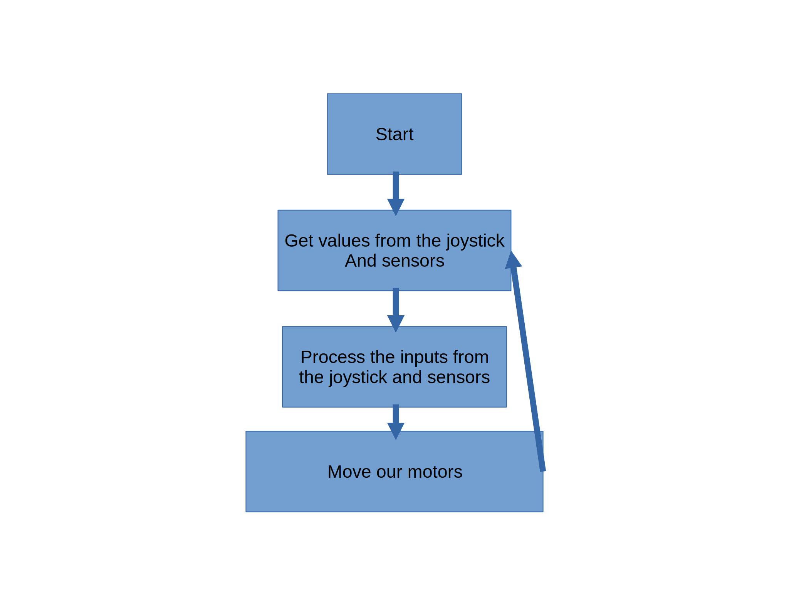
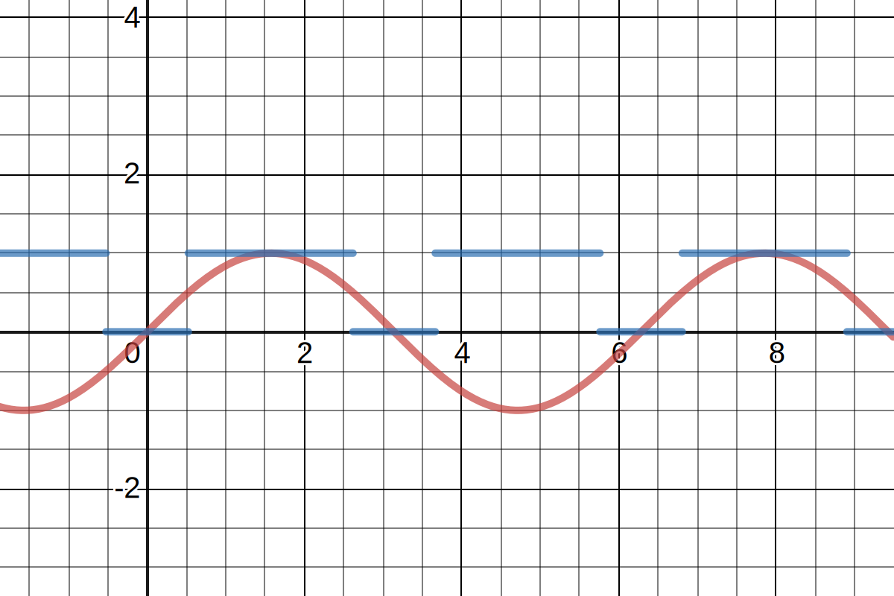
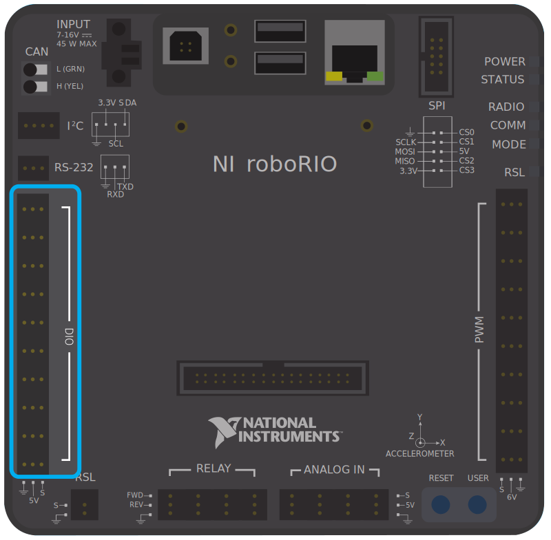

Introduction
Hello! Welcome to the Team 100 Software Binder.
Purpose of the Binder
This binder has been created with several purposes:
- Establish a single source of truth for Software knowledge
- Create continuity of software knowledge across generations of Team 100 students
Other Resources
Programming Concepts
There are several concepts that are fundamental to understanding FRC software. In this chapter, we will explore them.
Sense, Interpret Act
The Control Systems team has one high level job: take inputs, process them, then produce outputs.
The Control Systems Cycle
All development revolves around the Control Systems Cycle, which are the actions that your robot does tens of times per second.
Sense
Sensing is about having your robot understand its surroundings. If a robot can’t understand its surroundings, it wouldn’t know what to do! In its most basic form, a robot can sense inputs from a joystick. A handheld joystick can send a decimal value between -1 and 1 on the vertical and horizontal axis for both sticks. It also can send whether a button is pressed or not.
However, the real power comes through sensors. As the name suggests, a sensor’s job is to sense things about the robot. With that data, the robot can make decisions without needing a driver to tell it so. But why would I want the robot to make decisions on its own? If a robot can make decisions on its own, then it means that the driver or operator has to spend less time worrying about the details of movement.
Let’s take an elevator in a skyscraper to understand the power of sensors. When you are in an elevator, you press a button and the elevator goes where you want it to. That is because an encoder, a sensor that can tell position, knows where the elevator is at all times. If it didn’t, you would have to manually control the velocity of the elevator at all times, which would be more work for you and be more likely to fail.
Interpret
Once you can sense data, it is time to process it. In robotics, we use software to process our input data and turn it into an actionable plan. If the elevator in the previous section knows where it is, that doesn’t mean anything if it can’t establish a plan for its next action.
Interpreting data once again is simple and can grow to be very complex. In a typical drive-train robot, interpreting is a matter of taking joystick inputs, scaling them if necessary, and passing them to the drive-train motors. However, if you have an encoder, you may want to have a mechanism go to a specific position or velocity, and in your interpret step, you would do math to control the output to achieve your end goal.
Act
Acting is where your robot actually moves. After all, the entire purpose of a robot is to move. Usually, you will control motors. Motors turn in a circle, and can spin super quickly, slowly, or somewhere in the middle. When you drive a car, the motors cause the wheels to turn, which propels the car forward.
The other kind of acting, which is more rare, is a solenoid. These are systems that can either be out or in. They do not have in-between states. The value of solenoids is that they are simpler to control (since they only have two values), and they can move quickly (explosive), but they are not designed for a lot of the tasks that we have in robotics.
The Role of Software
As I mentioned earlier, software is responsible for the interpretation phase. All a robot program does is take inputs from sensors or joysticks, figure out the next step, and then tell the motors and solenoids to do their thing. While this is simple in theory, the difficulty and fun in the process comes from getting to figure out exactly what needs to happen in the interpretation phase. Do you remember those input output flow charts from elementary school math? Software is basically a input output flow chart for a robot.
The good thing is that for a getting started project, interpretation is very easy. As you learn, it gets more complex but you will still be able to handle it.
The Role of Electronics
Now that we understand the role of software, we now need to understand the role of electronics.
Electronics is responsible for the infrastructure that allows this system to exist. All of the sensors are chosen in a collaboration between software, electronics, and mechanics interests.
They are also responsible for the micro-controller and power delivery. A micro-controller is a computer that is designed to run the robot program. As of the time of writing this post, it is called the RoboRIO. The RoboRIO, the sensors, and the motors all require power, so it is also the responsibility of Electronics students to provide power to the robot.
Wiring, however, is the most time-consuming part of the Electronics Process. Wires act like the nervous system of a robot. They allow the RoboRIO to talk to sensors and motors, and act as the bridge between the three steps of the Control Systems Cycle. During your time learning electronics, you will learn how to make many different types of wires and the purposes for each.
Sources
Anatomy of a Basic Robot Program
We will begin by talking within the context of a VEX robot since it is much more simple than our FRC code. The code that you see below is a fully working program for the ProtoBot VEX robots that you will build early during your time on Team 100.
The Concept
As you read through the code, remember the diagram below: 
This diagram explains the high level of what we do when running the ProtoBot code. When we start, our robot begins by sensing its current state from the sensors and joysticks. It then interprets the sensors to define our actions which are the motors moving.
In the code, you will see how interpretation can exist beyond simply taking joystick inputs as we use our limit switches to see if it is safe to move our arm. In this snippet, you can see how we make a decision based on:
- What the driver wants to do and
- Whether it is safe to move the action
Lines that start with // are comments and are used to explain, but have no impact on how the robot actually works.
// Does the driver want to move up and is it safe to do so?
if((leftButtonUp == 1) && (armUpLimitSwitch == 0))
{
// If so, move up
motor[Arm] = 127;
}
// Otherwise, does the driver want to move down and is it safe to do so?
else if ((leftButtonDown == 1) && (armDownLimitSwitch == 0))
{
// If so, move down
motor[Arm] = -127;
}
// Otherwise, the driver either does not want to move or wants to make an unsafe movement
else
{
// In which case we will not allow the arm to move.
motor[Arm] = 0; // if you don't set the motors to 0, they will keep running forever
}
The Code
////////////////////////////////////////////////////////////////////
// Protobot.c //
////////////////////////////////////////////////////////////////////
// //
// This code is the end code for a fully functional VEX protobot. //
// //
// It demonstrates many of the basic concepts of a robot program. //
////////////////////////////////////////////////////////////////////
///////////////////////////////////////////////////////////////////////////////////////////////
// Configuring Your Robot //
///////////////////////////////////////////////////////////////////////////////////////////////
// In RobotC, lines that start with #pragma tell RobotC how your robot is set up. //
// //
// It has information about where motors are sensors are plugged in, as well as their names. //
///////////////////////////////////////////////////////////////////////////////////////////////
#pragma config(Motor, port2, RightDrive, tmotorServoContinuousRotation, openLoop)
#pragma config(Motor, port4, LeftDrive, tmotorServoContinuousRotation, openLoop)
#pragma config(Motor, port5, IntakeWheel, tmotorServoContinuousRotation, openLoop)
#pragma config(Motor, port7, Arm, tmotorServoContinuousRotation, openLoop)
#pragma config(Sensor, dgtl5, ArmUp, sensorTouch)
#pragma config(Sensor, dgtl6, ArmDown, sensorTouch)
/////////////////////////////////////////////////////////////////////////////////////////////////
// task main() //
/////////////////////////////////////////////////////////////////////////////////////////////////
// When you start running your code, your robot will need to know where to start reading from. //
// //
// In VEX, wherever you see task main is the place where //
// the code starts reading from //
/////////////////////////////////////////////////////////////////////////////////////////////////
task main()
{
//////////////////////////////////////////////////////////////////////////////
// Variables //
//////////////////////////////////////////////////////////////////////////////
// Variable keep track of information. They act like a bucket. //
// //
// The word int means that the information in the bucket is a whole number. //
// //
// For JoystickValues, the values range from -127 to 127. //
// For Buttons and LimitSwitches, the value is either 0 or 1. //
//////////////////////////////////////////////////////////////////////////////
int rightJoystickValue = 0;
int leftJoystickValue = 0;
int leftButtonUp = 0;
int leftButtonDown = 0;
int rightButtonUp = 0;
int rightButtonDown = 0;
int armUpLimitSwitch = 0;
int armDownLimitSwitch = 0;
//////////////////////////////////////////////////////////////////////////////////////////////////
// This code here means that your program will run forever. //
// //
// Just like when you read an instruction manual, you start at the beginning and go to the end. //
// However, if you aren't specifically told to repeat something, you wouldn't know to do so. //
// By telling our robot to repeat, it will run our code forever. //
//////////////////////////////////////////////////////////////////////////////////////////////////
while(1==1)
{
///////////////////////////////////////////////////////////////////////////////////
// Get joystick and sensor values //
///////////////////////////////////////////////////////////////////////////////////
// This code gets values from the joystick and puts those values into variables. //
// Once the values are in a variable, we can easily process them. //
// //
// The vexRT word tells our robot to look at the joystick. //
// Calls to SensorValue tell our robot to look at the value from an sensor. //
///////////////////////////////////////////////////////////////////////////////////
rightJoystickValue = vexRT[Ch2];
leftJoystickValue = vexRT[Ch3];
leftButtonUp = vexRT[Btn5U];
leftButtonDown = vexRT[Btn5D];
rightButtonUp = vexRT[Btn6U];
rightButtonDown = vexRT[Btn6D];
armUpLimitSwitch = SensorValue[ArmUp];
armDownLimitSwitch = SensorValue[ArmDown];
////////////////////////////////////////////////////////////////////
// Interpret and Act //
////////////////////////////////////////////////////////////////////
// This big block of code tells our robot to process our inputs //
// (sensors and joystick values) and identify an output (motors). //
// //
// The if statements work to identify the driver's intention. //
// Does the driver want to move the arm up? Is it safe to move //
// the arm up? All of that is evaluated within the parentheses //
// next to the word if. //
// //
// The calls, such as motor[Arm] = 127; tell the robot to move //
// a motor at a certain power, ranging from -127 to 127. //
// //
// Else acts as an aditional way to program logic, where the //
// robot will look and see if that logic is valid if and only //
// if the if statement above it was not true. //
////////////////////////////////////////////////////////////////////
motor[RightDrive] = rightJoystickValue;
motor[LeftDrive] = leftJoystickValue * -1;
if((leftButtonUp == 1) && (armUpLimitSwitch == 0))
{
motor[Arm] = 127;
}
else if ((leftButtonDown == 1) && (armDownLimitSwitch == 0))
{
motor[Arm] = -127;
}
else
{
motor[Arm] = 0; // if you don't set the motors to 0, they will keep running forever
}
if(rightButtonUp == 1)
{
motor[IntakeWheel] = 127;
}
else if (rightButtonDown == 1)
{
motor[IntakeWheel] = -127;
}
else
{
motor[IntakeWheel] = 0;
}
}
}
The Code Explained
Configuration
By default, your robot will not know what is plugged into what port on your VEX Cortex. At the very top of the code, we can tell our robot what is plugged into where. This has a couple of benefits:
- Creates a source of truth for what is plugged into where into our program
- Allows us to refer to motors and sensors by names (e.g.
IntakeWheel) rather than ports - Makes it easy to update the code when there is a change to ports, since a device like
IntakeWheelcan just be reassigned to a new port, rather than having to replace all uses in the code
The configuration lines are not written by hand, but rather configured through the RobotC Robot Configuration window.
task main()
When your robot reads your code, it needs to know where to start. Imagine how it difficult it would be for you to assemble a bed if there was no starting point! When you turn your Cortex on, it knows to look for something called task main() as the starting point for your code.
Since our robot knows to look to this location as the starting point, we put our entire robot code inside of this task.
Variables
Variables are like a bucket that can store information. We put our sensor and joystick values into buckets so that we can then use their values to interpret intent.
Variables have a specific type associated to them. A type is a specific format of information. Think of it like a calculator. It wouldn't make sense to put a photograph in to your calculator. So, your calculator expects your numbers in a specific format, usually decimals. Programs usually store numbers, true/false, and text. The types that are common in RobotC are:
| Name | Type | Min | Max | Example Values |
|---|---|---|---|---|
| int | Integer | -32,767 | 32,767 | -1, 15 |
| bool | True/False | true, false | ||
| string | Text | "abc" | ||
| float | Decimal | Varies | Varies | 0.123 |
| char | Integer | -127 | 127 | 'A', 1 |
Our code exclusively uses int and bool. When we use conditionals, we use bools even if we don't define them.
One Value
Variables must always have one and only one value
This is one of the most important concepts in programming. Let's take a look at what this means with one of the lines in our program:
int rightJoystickValue = 0;
Though this line seems simple, it is really powerful. With one line, we can tell our robot to:
- Create a new variable/bucket of type
int - Assign the name
rightJoystickValueto that new variable - Set
rightJoystickValue's value to0.
Now, when we use rightJoystickValue in our code, it returns 0. However, rightJoystickValue does not always have to be 0. Shortly after in the code, we call
rightJoystickValue = vexRT[Ch2];
This line, once again, does many things with very little code. You will notice that int is missing, since we don't want to create a new variable, we want to override the value of rightJoystickValue.
This line:
- Asks the joystick for the value of Channel 2
- Finds the variable called
rightJoystickValue - Copies the value from Channel 2 to the bucket called
rightJoystickValue
Conditionals
At the sense of interpreting data is logic. All logic boils down to the following concepts:
- if
- then
- else
- not
- and
- or
Think about it like this: If it is not raining and it is warm, then I will go to the beach. Otherwise, I will go to the mall.
We can take a look at our code in the same way. Let's take this snippet for an example:
if((leftButtonUp == 1) && (armUpLimitSwitch == 0))
{
motor[Arm] = 127;
}
else if ((leftButtonDown == 1) && (armDownLimitSwitch == 0))
{
motor[Arm] = -127;
}
else
{
motor[Arm] = 0; // if you don't set the motors to 0, they will keep running forever
}
This code can be read as: If the driver is signaling to move the arm up, and the arm is not at its highest position, then move the arm up. However, if that is not true, let's try seeing if the driver wants to move down. If the driver is signalling to move the arm down and it is safe to move down, then move the arm down. However, if neither of the previous are true, the stop the arm.
What situations end up with the arm staying stopped?
- The driver does not signal to move up or down
- The driver signals to move up, but the arm is at the maximum height
- The diver signals to move down, but the arm is at the minimum height
However, assuming that the arm is not at either extreme, what happens if the driver presses both the up and down button at the same time?
The answer lies in else if. Since we test for up first, if the driver presses up and down at the same time, the up condition being true causes the else if and the else conditions to never be evaluated, the arm will move up. However, if both are pressed and arm is at the maximum, since the first condition would be false, the second would be evaluated and return true, thus moving the arm down.
Telling Motors to Turn
This is the code that tells our motor to turn:
motor[Arm] = 127;
You may notice that this looks like setting a variable. That is because you are setting a variable. motor, just like vexRT is a special variable that the VEX Cortex knows about what can help you interact with the Cortex outputs.
Sources
- https://gitlab.com/-/snippets/2042879
- https://www.ddtwo.org/site/handlers/filedownload.ashx?moduleinstanceid=28565&dataid=40000&FileName=RobotC%20Programming%20Guide.pdf
- https://en.wikipedia.org/wiki/C_data_types
Sensors
Sensors allow our robot to get an understanding of itself and its surroundings. Some examples of what we would do with sensors include:
- Find the angle of an arm
- Find the position of an elevator
- Detect if a game object has passed a certain area in our robot
- Detect how far away we are from a game object
They tend to be separated into three groups: analog, digital, and other.
Types of Sensors
Analog
Analog sensors measure on a gradient (has intermediate values). They are often used for measuring physical attributes, such as the angle of a mechanism.
Here is a graph showing sample Analog (red) and Digital (blue) values over time 
Port Locations
On a RoboRIO (FRC), Analog Inputs are connected to the following ports:
 SOURCE
SOURCE
Digital
Digital sensors measure with values of 0 (false) or 1 (true). They are usually used to detect if something is present (such as through touch), though some sensors measuring distance may be considered digital.
Port Locations
On a RoboRIO (FRC), Digital Inputs are connected to the following ports:  SOURCE
Other
Some sensors, such as cameras, LiDAR, IMU (measuring pitch, yaw, and roll), and encoders (measure the distance a mechanism has moved) are technically digital, but their raw signal cannot be used without adding extra logic to interpret what the signals mean.
Examples of Sensors
This is only intended to be a beginning look at sensors. Look at docs.wpilib.org for more info on sensors used in FRC. As you can see, most of the sensors we use are digital.
| Name | Type | Measures | Notes |
|---|---|---|---|
| Limit Switch | Digital | Whether the switch is pushed | |
| Hall Effect | Digital | Whether a magnet is close to the reader | |
| Time of Flight | Other (I2C) | Distance to an object | |
| Encoder (Quadrature) | Digital | How far a motor has turned | Requires 2 DIO Ports |
| Inertial Measurement Unit (IMU) | Other (I2C) | The pitch, yaw, and roll of the robot | Place near the center of the robot |
| Ultrasonic Range Finder | Analog | Distance to an object |
Sensors in VEX Code
Java Basics
For FRC programming, Team 100 uses the Java programming language. In this section, we will begin to bridge from VEX programming over to Java programming while explaining programming concepts in more depth.
Setting Up Your Development Environment
In order to write Java code, you will need the WPILib Software and Driver Station.
If you would like a team-provided computer, please contact an IT student or mentor
To install your software, please visit this website and follow all of the steps excluding Installing LabVIEW for FRC (LabVIEW only).
You will need to ask a Control Systems mentor or veteran for the registration key for National Instruments (Driver Station).
A Note for Mac Users
If you have a Mac, you may be unable to use certain features. The FRC software was designed around using PCs, and as of the time of writing this, FRC Game Tools (including Driver Station) are PC only. Please contact an IT student or mentor to have a team laptop assigned.